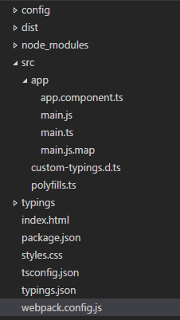
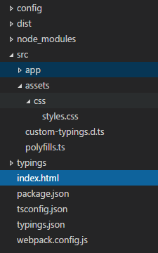
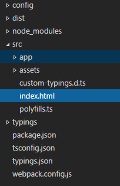

前言
前篇介紹到，透過 Webpack 進行 ts 的編譯，這篇，我們就來談談 Hot Reload.
注意事項
- 此文章的版本為 angular2 beta 15 ，未來應該也不會跟著版本更新…請看的朋友注意
- 裡面 Webpack 版本為 1.x , 2.x 可能會有幅度變動，請直接參考 angular2-webpack-stater
- 此文章壟長，且未必能 100% 成功 ( 因 Package 相依性、Webpack 版本、angular2 版本 可能會造成差異 )
- 有興趣的朋友，可以直接參考 angular2-webpack-stater Source Code
- 文章內容的所有 Soucre 來源為 angular2-webpack-stater ，小弟只是針對內容進行解析紀錄
- 文章開頭會以 Quickstart 為起始
- 官方 Source Code 裡面有很多的註解，但本篇文章，因為篇幅關係，小弟會把註解拿掉
將 app 目錄放到 src 目錄
當然，這一步不是必要的，但為了配合 angular2-webpack-stater 的目錄結構 ( 而且小弟我覺得這樣也不錯 )
所以我們就先進行小幅度調整一下。
首先，我們就先把整個 app 目錄，拷貝到 src 目錄底下。

接著，調整一下 webpack.config.js，將 main 的地方改成 ‘main’: ‘./src/app/main.ts’，
exclude 也改成 exclude: [helpers.root(‘src/app/index.html’)]
完整 webpack.config.js
1 | /** |
完成後，執行 webpack-dev-server 測試看看。
開啟 Hot Reload
既然要開啟 Hot Reload ，那我們就必須修改一下 webpack.config.js ，我們可以從 DefinePlugin 找到 HMR ，並改成 true。
1 | new DefinePlugin({ |
完整的 webpack.config.js
1 | /** |
接著，要新增 angular2-hmr package
1 | { |
加入後，使用 npm install 安裝。
接下來，我們要修改 main.ts ， 我們要把原本的 bootstrap 註解掉，改由 hotModuleReplacement 啟動。
1 | import {bootstrap} from 'angular2/platform/browser'; |
完成後 webpack-dev-server –inline –hot 測試一下，這時候我們只要改 app.component.ts ，畫面就會即時更改 ( 不刷新 )
調整 CSS 位置
最後，因為我們的 CSS 位置還被放在根目錄下，但我們希望 CSS 也能移到 src 底下，所以我們就在細部的調整一下。
首先，我們把 CSS 移到 src 底下的 assets 底下的 css ( 目錄請自行建立喔 ) ，完成如下

接著，我們就可以調整 index.html 的 link rel 改成 src/assets/css/styles.css，
但是，多了 src ，基本上很醜…我們希望外面更本就不知道 src 這個目錄 ( 甚至未來把這堆資源綁到 dist 目錄下面… )
所以我們希望的位置是 assets/css/styles.css 。 如下:
1 | <html> |
但這個時候執行，畫面的 css 就找不到了，因為這也合理，畢竟少了 src ，當然找不到。
所以我們要改一下執行命令，改成 webpack-dev-server –inline –content-base src/ –hot
content-base 的意思就是，他會把 src 目錄當成根目錄，所以所有資源就會從 src 底下開始。
把 index.html 也丟到 src 底下
等等 !! index.html 還在根目錄阿，大家都搬家搬走了，把 index.html 留在那邊，他粉可憐的。
所以我們這篇文章的最後一個步驟，就是也把 index.html 搬過去….
首先，我們一樣，把 index.html 移到 src 底下，如下:

接著，我們要講一下，我們前面沒有提到的 webpack HtmlWebpackPlugin。
這是一個 webpacl plugin ，透過這個 plugin ，可以輕鬆地產生出 bundle 後的樣板。( 例如可以協助調整要載入那些 script 之類的… )
並且未來置放到指定的輸出目錄下。
而透過 template 變數，我們可以指定我們預設的 html 位置，他就會針對此 html 進行調整。
而 chunksSortMode 可以協助我們，依據未來要載入 bundle 後的 js ，定義載入順序。
( vendor 目前我們還沒定義到 )
所以，我們要修改一下 webpack.config.js 把 HtmlWebpackPlugin 裡面的 template 參數調整成 template: ‘src/index.html’ 如下
1 | new HtmlWebpackPlugin({ |
完整的 webpack.config.js
1 | /** |
完成之後，我們就可以進行測試了。
參考資料
- https://angular.io/docs/ts/latest/quickstart.html
- https://github.com/angularclass/angular2-webpack-starter
- https://github.com/angular/angular/issues/5755
- https://github.com/typings/typings
- http://www.typescriptlang.org/docs/handbook/tsconfig.json.html
- https://github.com/s-panferov/awesome-typescript-loader
- https://github.com/ampedandwired/html-webpack-plugin